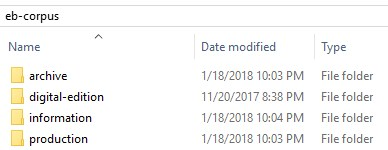

Data Organization
A publication as large as this one needs a clear means of organizing its data. The Encyclopedia Project uses specific naming conventions for all files and folders, to manage its tens of thousands of files.
All files are saved in the eb-corpus folder on the DSC server.
Figure: eb-corpus folder

Each of the folders holds files for different aspects of the project and the process of creating new digital editions of the historic encyclopedias.